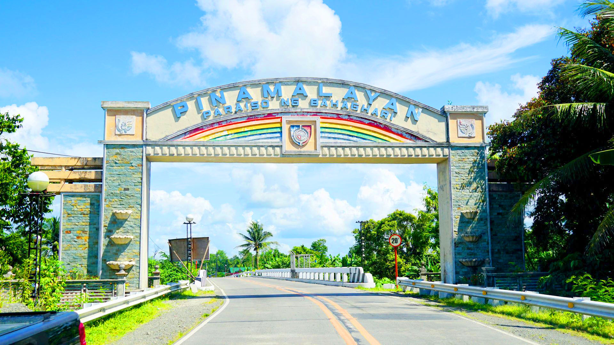
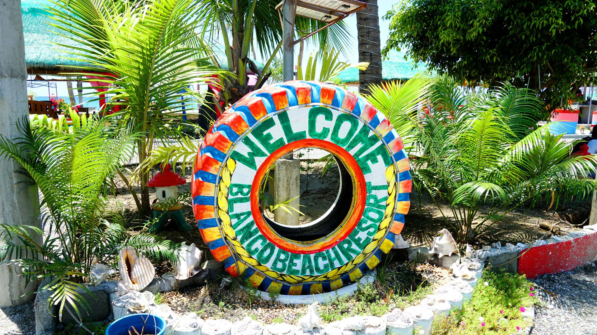

WELCOME TO PINAMALAYAN
Discover the hidden gems of this enchanting town nestled in the heart of Oriental Mindoro, Philippines.

Pinamalayan is a coastal municipality in the province of Oriental Mindoro.
The municipality has a land area of 282.26 square kilometers or 108.98 square miles which constitutes 6.66% of Oriental Mindoro's total area. Its population as determined by the 2020 Census was 90,383. This represented 9.95% of the total population of Oriental Mindoro province, or 2.80% of the overall population of the MIMAROPA Region. Based on these figures, the population density is computed at 320 inhabitants per square kilometer or 829 inhabitants per square mile.
LOCATION
The municipal center of Pinamalayan is situated at approximately 13° 2' North, 121° 29' East, in the island of Mindoro. Elevation at these coordinates is estimated at 13.8 meters or 45.2 feet above mean sea level.

History of Pinamalayan, Oriental Mindoro
The name Pinamalayan, as the story goes, came from the words “IPINAMALAY NA” (“It has been made known to us”), as exclaimed by its first settlers who lost their bearing amidst a turbulent sea, when a rainbow appeared in the horizon and guided them towards safety and to a place where they discovered abundant resources for livelihood. Other sources attribute the name Pinamalayan simply to the fact that the area was once a vast area planted to rice, hence the name “PINAGPALAYAN”.
The Town of Pinamalayan is one of the oldest in the Province of Oriental Mindoro. Its territory once went as far as the old settlements of Sumagui and Anilao which are now part of the towns of Bansud and Bongabong respectively. The Town of Pola was also a former part of Pinamalayan until it got its permanent township status in the early years of American Colonization while Gloria was separated from Pinamalayan in 1964.
These territorial reorganizations signify the role of Pinamalayan as a major political and economic center in the southern part of Oriental Mindoro way back the latter years of Spanish regime. Administrative orders regulating secular activities in these settlements were once sent from Pinamalayan thereby giving the town derivative advantages in trade, infrastructure development, social facilities and even political accommodations at the onset of the century.
Pinamalayan was organized as a permanent settlement in 1800’s under the leadership of a Gobernadorcillo. In 1914, the Municipal Council acted on the selection of a new town site through viva-voce voting. It was in 1916 that the seat of the Municipal Government was transferred from Lumambayan to its present site. During the American Occupation American planners made sure that the town is properly laid out according to a planning system that included wide, symmetrical roads with appropriate drainage facilities. It was also during this time that a big plaza was constructed adjacent to the municipal building. To date, Pinamalayan remains a model in town planning.
Presently, Pinamalayan is identified as one of the three major growth centers of the province together with Calapan City and Roxas. It is classified as a First Class Municipality by virtue of DOF Department Order No. 20-05 as implemented by BLGF Memorandum Circular No. 01-M (43) – 05 issued on January 31, 2006. The municipality’s strategic location (being at the center of the province), its well-planned Urban Core, the presence of the Intra-Regional Transport, its high agricultural potentials and the high percentage of available labor force spell the advantage necessary for sustainable development strategies. Its physical environment and socio-economic accomplishments are efficient starting points from which development efforts may be linked with. Having the best planned Poblacion in Oriental Mindoro, Pinamalayan with its grid-pattern of roads at 20-meter wide right-of-way in major segments can still absorb further urban growth and remains a model in town planning.
With its current state of economy and development, Pinamalayan is vying to become the second city in the Province of Oriental Mindoro.
Blanco Beach Resort

Cabanas and cottages are available for rent at Blanco Beach Resort. Perfect for family gatherings or outing with friends, this destination lets you experience the sun, sea and sand at its best.
LOCATION: MARFRANCISCO, PINAMALAYAN, ORIENTAL MINDORO
Cawa-Cawa Falls
This waterfalls in Pinamalayan got its name from its cauldron shape. A short walk will take you to the falls. interestingly, there are many myths and folktales surrounding Cawa-cawa Falls that are as enjoyable as the swimming activities in the destination itself.
LOCATION: BULI, PINAMALAYAN, ORIENTAL MINDORO
Aplaya de Analiza

With cottages available for day tours, Aplaya de Analiza is perfect for picnics, gathering of family and friends or just a fun weekend getaway.
LOCATION: GUINHAWA, PINAMALAYAN, ORIENTAL MINDORO
Pili-Banilad-Ranzo Biking Trail

With a portion of this trail comparable to Patapat Viaduct in Pagudpud, this coastal road in Pinamalayan will give you readtrip feels. When biking, the sea breeze will energize you as you travel along the road facing the beach.
LOCATION: PILI, BANILAD AND RANZO, PINAMALAYAN, ORIENTAL MINDORO
Pinamalayan Municipal Park

The Pinamalayan Municipal Park, located in front of the Municipal Hall is where the town's activities and events are held. Inside the park are several playgrounds and monuments that memorialize significant points in Pinamalayan's history.
LOCATION: ZONE 3, PINAMALAYAN, ORIENTAL MINDORO
Pinamalayan Rainbow Junction/Marfranisco Triangle

The Pinamalayan Rainbow Junction is a colorful landmark located along the Strong Republic Nautical Highway that showcases the town's emblem which is the rainbow, a testament to its colorful culture and history.
LOCATION: MARFRANCISCO, PINAMALAYAN, ORIENTAL MINDORO
Pinamalayan Welcome Arch

You will be greeted by this colorful and artistic arch which welcomes you when you enter the Municipality of Pinamalayan.
LOCATION: STO. NIÑO, PINAMALAYAN, ORIENTAL MINDORO
Ranzo Fish Sanctuary

This destination in Brgy. Ranzo, Pinamalayan is a diverse marine santuary. With super clear water and calm sea, you can try different activities like kayaking, snorkeling and even diving.
LOCATION: RANZO, PINAMALAYAN, ORIENTAL MINDORO
Ranzo Light House

After a 20-minute trek, you will reach Ranzo lighthouse which offers a panoramic view of the Ranzo Fish Sanctuary and beyond.
LOCATION: RANZO, PINAMALAYAN, ORIENTAL MINDORO
Wawa Mangrove Forest And Kayaking Site

In this kayaking adventure site, roam around and paddle through the mangrove forest and appreciate the beauty of nature.
LOCATION: WAWA, PINAMALAYAN, ORIENTAL MINDORO

Bahaghari Festival
The yearly Bahaghari Festival is a colorful commemoration of the importance of the rainbow in the history of the town of Pinamalayan. The celebration includes a street dancing competition, cultural presentations, religious and cultural activities, and products and trade fair. Said activities showcase the values of the people, appreciation of their cultural heritage, the strength to face up to life's challenges and unity and harmony as in the colors of the rainbow. Like the rainbow which rises to give color in the sky after torrent of rain, the Bahaghari Festival is a reflection of the continuing effort of the people of Pinamalayan that there is truly paradise at the end of the rainbow.